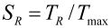
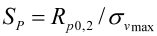

|
|
|


计算
按 Kollmann 设计： 如果选择此方法，则可根据所需安全系数以及指定的载荷和几何形状，确定最大角偏差 γmax、安装用压装距离 af 和连接力。
按 Kollmann 验证： 在无角度偏差和最大角度偏差两种情况下分别计算可传递扭矩。
还可以输入安装用压装距离 af 或安装压入力 Ffmin。
针对屈服点和滑动的安全系数也在验证过程中被计算。
Kollmann 定义的安全系数包括所需安全系数，您可以在"设置"选项卡中定义。要显示它，请选择
方法如 DIN 7190-2:2017 中所定义： 在本计算方法中，滑动力矩、连接力和轴向力是在所有元件已连接的状态下，从输入转矩、无外力安装以及所有几何数据中计算得出的。滑动安全性是通过这种方式进行计算的。如果存在不同的外部轮毂直径或不同的内部轴直径，这些也可以定义为切片（最多7个）。每个切片的值分别计算后相加。最大值用于接合处的压力。

对于中心载荷作用的情况，抗滑动安全系数 SR 的最小值应满足 SRmin > 1.3。
此外，如果为安装而手动输入连接力 pFA，还会计算有效等效应力。最大等效应力与特定材料的屈服点进行比较，安全系数由此确定。当使用空心轴时，最大等效应力总是出现在轮毂或轴的内径处。

抗屈服点安全系数 SP（塑性流动）应达到 SPmin > 1.3，以便零件在装配或拆卸时不会发生塑性变形。
Calculation
Sizing according to Kollmann: If you select this method, the maximum angular deviation γmax, the pressing distance for mounting af, and the joining force, can be sized using the required safeties and the specified load and geometry.
Verification according to Kollmann: The transmittable torque is calculated for no angular deviation and for maximum angular deviation.
You can also input the pressing distance for mounting af or the mounting pressing force Ffmin.
The safeties against the yield point and against sliding are also calculated in the verification process.
The safeties defined by Kollmann include the required safeties, which you can define in the Settings tab. To display it, select
Method as defined in DIN 7190-2:2017: In this calculation method, the sliding moment, joining force, and axial force are calculated for the state at which all the elements are already joined, from the input torque, mounting without force and all the geometry data. The safety against sliding is calculated in this way. If different external hub diameters or different internal shaft diameters are present, these can also be defined as slices (max. 7). The values are calculated individually for each slice and then added together. The maximum value is used for the pressure in the joint.
In the case of a central load application, the safety against sliding SR should have a minimum value of SRmin > 1.3.
In addition, the effective equivalent stresses are calculated if you enter a joining force manually for mounting pFA. The maximum equivalent stress is compared with the yield point of the particular material.The safety is defined in this way. The maximum equivalent stresses appear every time for the inner diameter of the hub or shaft when a hollow shaft is being used.
The Safety against yield point SP (plastic flow) should reach a value of SPmin > 1.3 so that the parts do not undergo plastic deformation when being assembled or disassembled.